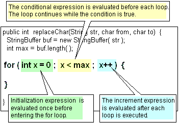

Iterative statements. |
Strings |
||
| Loops in Java continue while an expression is true. The conditional test in a while (condition) { ... }; statement comes upfront. This means that the block of statements may not be executed at all, if the condition turns out to be false first time into the loop (the red arrow in the example below).
If you always want the statement block to execute at least once, you can turn a while statement on its head like this (don’t forget the semicolon at the end!). // do ... while( ) loop
int i = 0;
do {
int x = getNextYear();
if ((x > 0) && (x % 4 == 0)) {
System.out.println("LeapYear=" + x);
}
i++;
} while (i < 500);
Use the continue
or break
statements to go to the next loop iteration or break out of a loop.
Note: The loop control variable must be defined outside the braces of the loop because any variable defined inside the loop, goes out of scope when each loop ends and its value cannot be referenced from outside the loop (in the while() expression for example). The for statement
has three parts to control looping. The first part (in the green
box), is processed once on first execution of the for statement,
and can serve to define and initialize any loop control variables.
The second part (in the yellow box), is the while condition test.
The body of the for statement is executed while it is true. The
third part is the iteration expression (in the blue box). It is
processed after each execution of the body of the loop (or after
a continue statement) and usually serves to increment the loop control
variables.  You may omit any part of the for statement, but the semicolons are still required. Multiple statements may be seperated by commas, within each part of a for statement. This example makes use of an Array of integers. int [] array = new int[15];
int max = array.length;
for (int y = 0,z = max / 2; y < max; y++ ) {
You can use the continue or break statements to skip to the end of the current loop or break out of the loop altogether. |
|||
| Any statement in Java can be preceded by a label, which takes the form of a name followed by a colon. Labels can be useful when you want to continue or break out of a loop that is nested within another loop. The switch statement, also makes use of the keyword break. outer: for (int i = 0 ; i < myArray.length ; i++) {
for ( int j = 0 ; j < myArray[i].length; j++) {
if (myArray[i][j].equals(‘X’)) break outer;
}
}
// break out to here once ‘X’ marks the spot |
|||